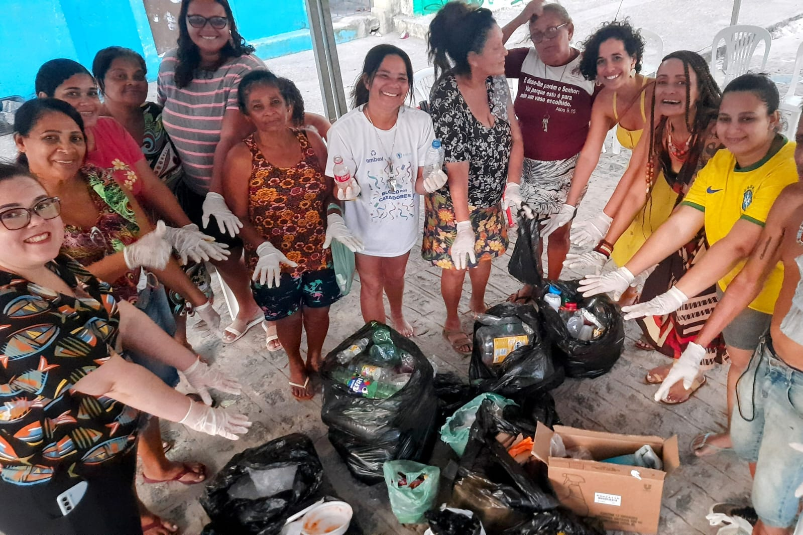

Las ciudades responden por el 75% de las emisiones de carbono en todo el mundo, lo que hace que su papel sea fundamental para lograr alcanzar cero emisiones de carbono. Para ser sostenible, es necesaria una descarbonización rápida y socialmente justa.
COALICIONES URBANAS TRANSFORMADORAS
Bienvenidos al proyecto medioambiental participativo más importante del mundo. Te contaremos la experiencia en Argentina, Brasil y México.

El proyecto Coaliciones Urbanas Transformadoras tiene como objetivo contribuir a las cero emisiones de carbono para 2050, apoyando a las ciudades para transformar sus estructuras sociales, tecnológicas y políticas en sistemas más sostenibles.